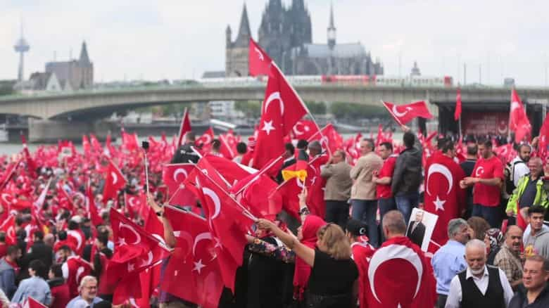
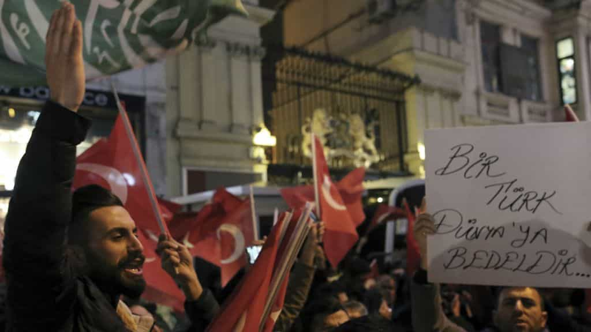

“German” Turks are an ever-increasing share of Germany’s population, but contemporary events demonstrate how many of them, perhaps even a majority, are much more loyal to Turkey than to the German state or the West generally. Turkey’s President, Recep Tayyip Erdoğan, recently called on his “countrymen” in Germany to boycott Angela Merkel’s “conservative” Christian Democratic Union (CDU), plus the center-left Social Democratic Party (SPD), and the leftist Greens Party.
Although the election did not begin until late September, polling indicated that many “German” Turks listened to someone who for many of them is technically a foreign leader. More than a third of those asked in the weeks before the election said they would not be voting.
In addition, Erdoğan himself is highly popular amongst Turks in Germany and the Netherlands, even after he labeled the leaders of those countries as “enemies” and “Nazis” ([1] [2]). He also failed to distance himself from political allies in the Turkish media who spoke of full-blown war with Germany and France. Millions of “European” Turks either support this rhetoric or will refuse to oppose it.
As people interested in the preservation of Western culture, we should be deeply alarmed by this and see it as replicable for many other ethnic groups in Europe, America and elsewhere. It is yet another indication that very large non-Western migrant communities, many of them existing for decades, are quite happy to follow the directives of an outside power with which they have strong or exclusive blood ties. In the event of far more serious bickering between Western and non-Western countries, or even armed conflict, it seems almost certain that millions of ethnic minorities in places such as Europe will firmly side with their non-Western homelands.
A sign of things to come

Turks in Germany, many or most of them German citizens, have rallied in large numbers for Erdoğan in the past.
Since last year, Germany and a number of other countries, including the Netherlands, have been arguing with Turkey over allegedly repressive measures taken by President Erdoğan after an attempted military coup against him. The Netherlands, which actually has a smaller proportion of ethnic Turks than Germany, still felt a very powerful backlash from its Turkish population after Erdoğan stirred up highly nationalist sentiments in some Dutch cities. He went so far as to try to hold political rallies for himself on Dutch soil.
Whilst you might think that Return Of Kings would have supported calls for a boycott of three German political parties which have supported the “open doors” immigration policy that started in 2015 (or smirked at Turkey causing mayhem for a cuckservative Dutch government), Erdoğan’s interference is highly disturbing. He may have helped a little in the massacring of the German Socialists that took place last month, and thus helped the anti-mass migration Alternative für Deutschland (AfD), but this was simply a misfiring of a nevertheless troubling power many foreign leaders now wield in Western countries. In the future, we should expect more of this and that it will be used much more effectively and dangerously.
The basic disloyalty of many immigrants is obscured by economic prosperity

To put it bluntly, Germany has been an employment and welfare teat for many Turkish immigrants and their descendants. Compared to the wages and other financial benefits they might reap in their ancestral homeland, even low-end jobs in German supermarkets or factories are much more preferable. Millions of Turks now live in Germany. In response, the authorities have been heedless about what might happen if the economically propped-up multicultural bubble bursts.
We have no idea about how many immigrants would lovingly turn towards their kin elsewhere if major economies started to fail. If unemployment in Germany, which perennially hovers around 10%, doubled or tripled, would we really expect German multiculturalism to hold itself together? And what if, due to a financial crisis, welfare payments had to be cut and certain overrepresented ethnic communities received less than what they previously had? With no “German” culture to keep the country functionally intact, could we really expect positive vibes and sing-a-longs?
Turks are one of the least problematic groups from the Middle East–so what will happen with other communities in the future?

The present hordes of Syrian, North African and other Middle Eastern migrants will probably be much more troublesome than the established Turkish communities of Europe in the coming years.
For all the negative talk I hear about Turks in Europe, they are actually the most secular and non-fundamentalist of all the major Middle Eastern ethnic groups. Anyone familiar with the founding of the Turkish Republic and the biography of Mustafa Kemal Atatürk knows that Turkey largely avoided the political instability and social uproar we associate with other heavily populated countries such as Egypt or Iran. That secular, more moderate strain still exists today, albeit in diluted form with the likes of Erdoğan.
Turkish nationalism is certainly a major threat to Europe, yet I would probably much rather have five million Turks in Germany than five million Egyptians. Hence this question: if the more secular Turkish communities are causing such troubles, what will happen with other growing minority communities in the future? When the shit hits the proverbial fan, don’t say I didn’t ask.
Read More: Turkish Leader Ataturk Proved That A Nation’s Terminal Decline Can Be Reversed